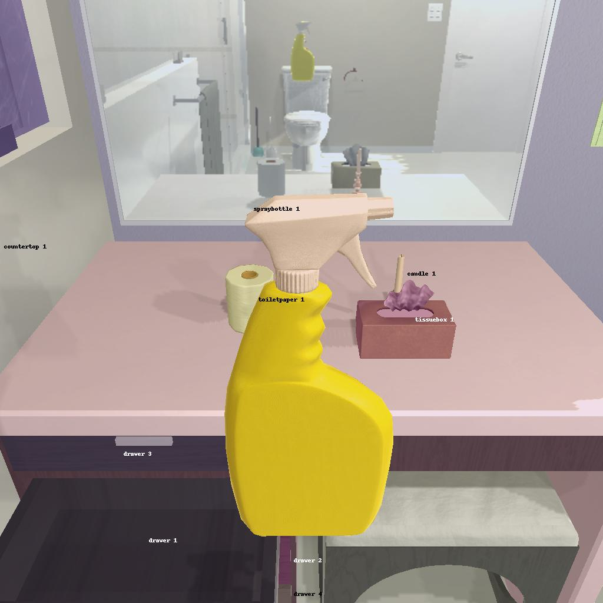

---------------------------------------------------------task: 28---------------------------------------------------------
--------------------------------------------------------------------------------------------------------------------------------------------------------------------
--------------------------------------------------------------------------------------------------------------------------------------------------------------------
Step:--------------------------------------------------------------------------7-------------------------------------------------------------------------------
----------------------------------------
VLM Prompt:
Image1:
Image2:
**Instruction**
1. Analyze the provided image to identify all visible household objects, focusing on those relevant to the task description "find two spraybottle and put them in toilet."
2. Use the analysis of the image and the task hint "The agent must find an object of the desired type, pick it up, find the correct location to place it, put it down there, then look for another object of the desired type, pick it up, return to previous location, and put it down there with the other object." to answer the question: what is the most reasonable action in the choices for the task description "find two spraybottle and put them in toilet"?
4. Decide and write the answer using the template: The answer is: (i): , where i is the real number. If there is no desired object in the image, search every place based on **Initial Observation** to find the object. And if no one is exactly correct, choose a similar answer.
**Initial Observation**
You are in the middle of a room. Looking quickly around you, you can see bathtub (1), bathtubbasin (1), cart (1), sink (1), garbagecan (1), sinkbasin (1), countertop (1), drawer (1-4), toilet (1), toiletpaperhanger (1)
**Answer Choices**
(1): go to bathtub 1
(2): go to bathtubbasin 1
(3): go to cart 1
(4): go to sink 1
(5): go to garbagecan 1
(6): go to sinkbasin 1
(7): go to countertop 1
(8): go to drawer 3
(9): go to drawer 4
(10): go to toilet 1
(11): go to toiletpaperhanger 1
(12): open drawer 2
(13): close drawer 2
(14): put spraybottle 1 in/on drawer 2
(15): examine spraybottle 1
(16): examine drawer 2
**Answer**
Let's think step by step by following the instructions.
----------------------------------------
----------------------------------------
Original Response:
First, we need to find two spray bottles. From the initial observation, we can see that there is a spray bottle on the countertop (spraybottle 1). Therefore, the first reasonable action would be to go to the countertop where the first spray bottle is located.
The answer is: (7): go to countertop 1
After picking up the first spray bottle, we should look for the second one. Since the image does not show a second spray bottle, we should search every place based on the initial observation. The drawers are common places to store such items, so it would be reasonable to check there next.
The answer could then be: (8): go to drawer 3 or (9): go to drawer 4 or (12): open drawer 2
Since we need to choose the most reasonable action based on the choices given and the task description, we should select one of these options to find the second spray bottle. Since drawer 2 is not mentioned in the initial observation as being open, it would be logical to try and open it to search for the second spray bottle.
The answer is: (12): open drawer 2
After finding the second spray bottle, the next step would be to put them both in the toilet as per the task description.
The answer is: (10): go to toilet 1
Since the action of actually placing the spray bottles in the toilet is not an option, the final answer would be to go to the toilet with the spray bottles.
----------------------------------------
----------------------------------------
>>> Refine Original VLM Response and Get Pure Action: go to countertop 1
After picking up the first spray bottle, we should look for the second one
----------------------------------------
-----------------------------------------------------------------
Running time: 11.967273235321045 seconds
Total Money: 14.003350000000003
-----------------------------------------------------------------
-----------------------------------------------------------------
Text Observation:Nothing happens.
-----------------------------------------------------------------
UNSUCCEED